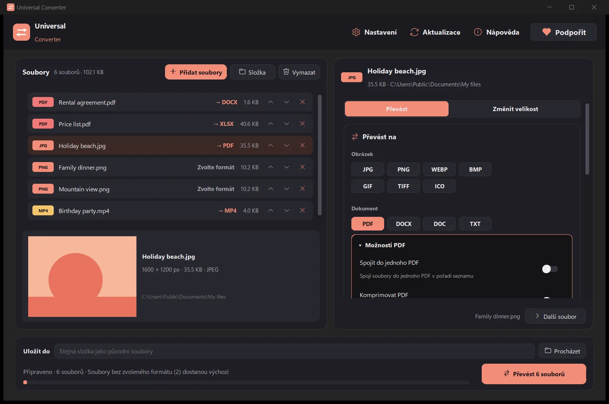
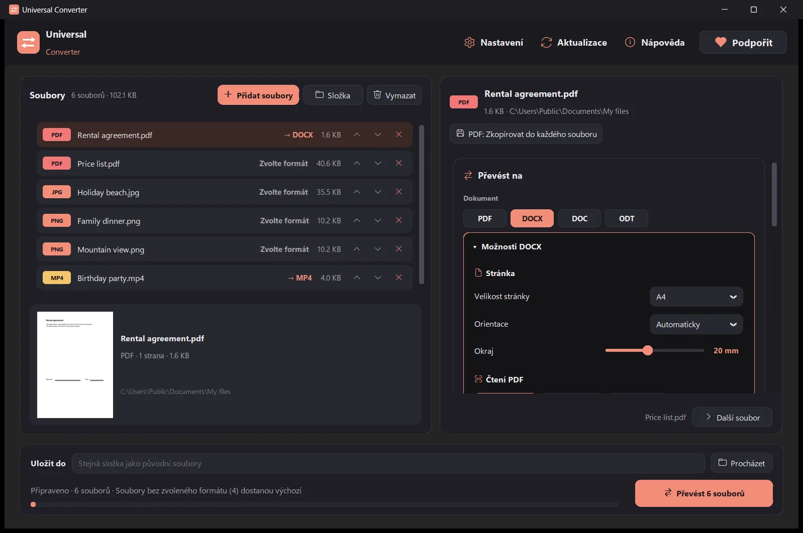
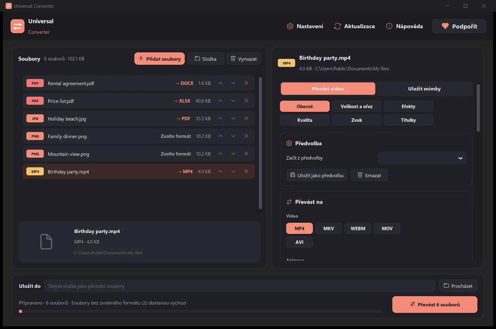
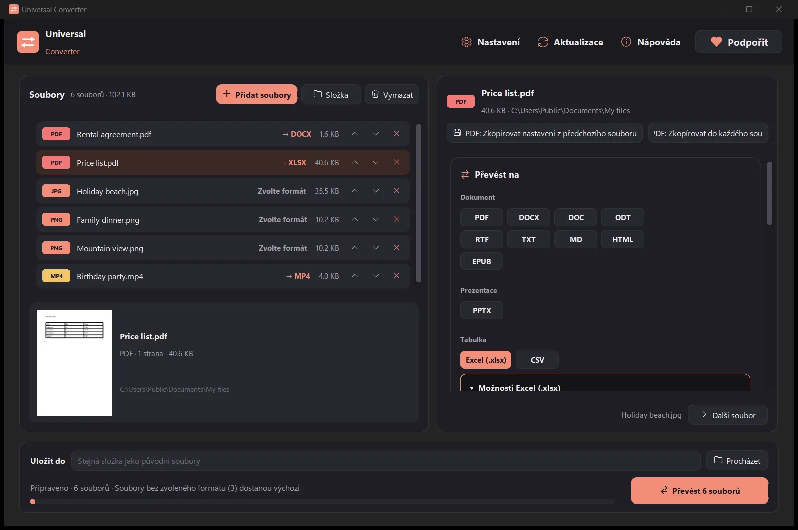
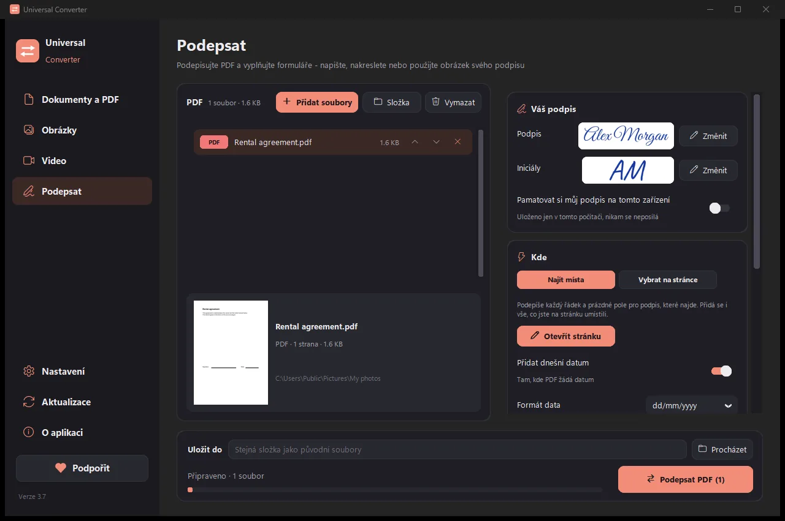

Převádějte soubory ve vlastním zařízení
Obrázky, dokumenty, video a zvuk, PDF a tabulky do Excelu, vše v jedné aplikaci. Nic se nenahrává: vaše soubory nikdy neopustí vaše zařízení.
Jak instalovat a aktualizovat
- Otevřete stažený soubor .dmg a přetáhněte Universal Converter do složky Aplikace.
- Otevřete aplikaci. Napoprvé ji macOS zablokuje, protože není podepsaná společností Apple: klikněte na Hotovo.
- Otevřete Nastavení systému > Soukromí a zabezpečení, sjeďte dolů, klikněte na Přesto otevřít a zadejte heslo. Stačí to udělat jednou.
Aktualizace: pokud to při prvním otevření aplikace povolíte, bude při každém spuštění hledat nové verze, ověří jejich digitální podpis a nainstaluje je, až se rozhodnete.
Jak instalovat a aktualizovat
- V telefonu klepněte na Stáhnout pro Android.
- Otevřete stažený soubor. Pokud se Android zeptá, povolte prohlížeči nebo správci souborů instalovat aplikace.
- Klepněte na Instalovat.
Aktualizace: aplikace zhruba jednou denně kontroluje a dá vědět, když je připravená nová verze. Stáhněte ji stejně a nainstalujte přes starou; nastavení zůstanou zachována.
Jak instalovat a aktualizovat
- Stáhněte soubor .AppImage.
- Udělejte ho spustitelným: klikněte pravým tlačítkem, otevřete Vlastnosti > Oprávnění a povolte spouštění jako programu (nebo v terminálu: chmod +x Universal-Converter-*.AppImage).
- Dvakrát na něj klikněte. Nic se neinstaluje: aplikace je tento jediný soubor.
Aktualizace: pokud to při prvním otevření povolíte, aplikace při každém spuštění hledá nové verze, ověří jejich digitální podpis a nahradí soubor AppImage na jeho místě.

Soukromě
Vše běží ve vašem zařízení. Žádné nahrávání, žádná fronta, žádné limity velikosti.
Zdarma
Používání je zdarma, bez reklam, bez účtu a bez vodoznaku.
34 jazyků
Angličtina, řečtina, španělština, italština, němčina, francouzština, portugalština (Portugalsko a Brazílie), polština, ruština, arabština, hebrejština, čínština, japonština, korejština, tamilština, afrikánština, jorubština, hauština, hindština, indonéština, turečtina, vietnamština, švédština, nizozemština, dánština, ukrajinština, čeština, rumunština, bulharština, norština, malajština, filipínština a svahilština.
Pět nástrojů v jednom okně

Dokumenty a PDF
Převod mezi PDF, Wordem, ODT, RTF, TXT, Markdownem, HTML, EPUB, PowerPointem a Excelem. Stránky na obrázky a spojení více souborů do jednoho PDF. Písma, velikosti a barvy se zachovají. Zmenšení PDF na velikost, kterou zvolíte. Ze skenů a vyplněných formulářů se stane upravitelný text a tabulky rozvržené jako stránka. Tabulky, i bez čar jako na bankovních výpisech, se do Wordu dostanou jako skutečné tabulky a otevřou se i staré soubory Wordu (.doc) a PowerPointu (.ppt).
Obrázky
Převod mezi JPG, PNG, WEBP, TIFF, BMP, GIF a ICO. Změna velikosti v pixelech, procentech nebo podle velikosti souboru, spojení obrázků do souboru PDF nebo Word a čtení textu z obrázků (OCR). Přidat lze i PDF: z každé stránky se stane obrázek.

Video
Převádějte videa mezi MP4, MKV, WebM, MOV a AVI a komprimujte je pomocí AV1, H.265, H.264 nebo VP9. Stříhejte, ořezávejte, otáčejte a měňte velikost, vytvářejte GIFy, ukládejte snímky jako obrázky nebo si nechte jen zvuk jako MP3, M4A, FLAC, WAV, OGG či Opus. Při více videích může mít každé vlastní nastavení. Na Androidu: MP4, MKV, WebM, MOV nebo GIF, nebo zvuk jako M4A, OGG či WAV; stříhání, ořez, otočení, změna velikosti a ukládání snímků.

Excel
Tabulky z PDF, skenů a fotek do Excelu nebo CSV: bankovní výpisy, faktury, ceníky. Čte řečtinu, angličtinu, španělštinu a více než 30 dalších jazyků.

Podepsat
Podepisujte PDF a vyplňujte formuláře. Napište své jméno ručně psaným stylem, nakreslete podpis nebo použijte jeho fotku. Aplikace sama najde řádky pro podpis, nebo kliknete či klepnete tam, kde má být podpis, iniciály, datum, text nebo zaškrtnutí. Podepište mnoho souborů najednou; originály zůstanou nedotčené.
- Pro video používá grafickou kartu, kdykoli to jde: obvykle 5 až 20× rychleji.
- Přetáhněte celé složky: všechny soubory se převedou najednou.
- Upozorní, když soubor patří na jinou kartu, a jedním kliknutím ho tam přesune.
- Oznamuje nové verze; ve Windows, na Macu a v Linuxu je za vás umí nainstalovat, digitálně ověřené.
- Světlý a tmavý vzhled podle vašeho zařízení.
Jak to funguje
- Otevřete Universal Converter a vlevo zvolte Dokumenty a PDF · Obrázky · Video · Podepsat.
- Přetáhněte do okna soubory nebo celou složku, nebo klikněte na Přidat soubory.
- Klikněte na Převést. Nové soubory se uloží vedle originálů nebo do složky, kterou zvolíte.
Co umí
- Převeďte PDF do Wordu
- Převeďte dokumenty Wordu do PDF
- Spojte více souborů do jednoho PDF
- Zkomprimujte PDF na velikost, kterou zvolíte
- Zkomprimujte PDF na 100 KB, 200 KB nebo jakoukoli velikost pro online formuláře
- Převeďte stránky PDF na obrázky JPG
- Převeďte naskenovaný dokument na upravitelný soubor Wordu
- Převádějte obrázky mezi JPG, PNG, WEBP a dalšími
- Změňte velikost obrázků nebo je zmenšete na velikost souboru
- Změňte velikost fotky nebo podpisu na 20 KB, 50 KB nebo přesné pixely
- Spojte fotky do jednoho PDF
- JPG do PDF pod 100 KB
- Zkopírujte text z obrázku (OCR)
- Komprimujte video, aniž byste ho nahrávali
- Převádějte videa mezi MP4, MKV, WebM, MOV a AVI
- Uložte zvuk z videa jako MP3
- Vytvořte GIF z videa
- Přeneste tabulky z PDF do Excelu
- Převeďte bankovní výpis v PDF do Excelu
- Vytáhněte tabulky z faktur v PDF do Excelu
- Podepište PDF
- Vyplňte formulář PDF
Dotazy
Je opravdu zdarma?
Ano. Universal Converter je zdarma, bez reklam, bez účtu a bez časového omezení. Pokud vám pomáhá, můžete jeho vývoj podpořit dobrovolným příspěvkem, ale nikdy nemusíte.
Nahrávají se moje soubory někam?
Ne. Každý převod probíhá ve vašem vlastním zařízení, takže funguje i bez připojení k internetu. Aplikace se k internetu připojuje jen kvůli hledání aktualizací, stažení vámi zvolených abeced pro rozpoznávání textu a, pokud to povolíte, odeslání anonymních hlášení o chybách.
Je stahování bezpečné?
Ano. Než se dostanou na tuto stránku, stažení každé verze pro Windows, Mac, Linux a Android zkontroluje na VirusTotal asi 60–70 antivirových programů; odkaz pod každým tlačítkem ke stažení otevře zprávu o daném souboru. Aplikace nezobrazuje reklamy ani nesbírá osobní údaje a verzi z Microsoft Storu navíc kontroluje a podepisuje Microsoft.
Windows zobrazují upozornění SmartScreen. Je to normální?
Ano. Instalační program zatím nemá podpis kódu, takže ho Windows nepoznají. Zvolte „Další informace“ a pak „Přesto spustit“. Další aktualizace pak digitálně ověřuje sama aplikace. Nebo ji nainstalujte z Microsoft Storu, kde se žádné upozornění nezobrazí.
Jak ji otevřu na Macu?
Otevřete stažený soubor a přetáhněte Universal Converter do složky Aplikace. Aplikace není podepsaná společností Apple, takže ji macOS při prvním otevření zablokuje: klikněte na Hotovo, pak otevřete Nastavení systému > Soukromí a zabezpečení, klikněte na „Přesto otevřít“ a zadejte heslo. Stačí to udělat jednou.
Jak ji nainstaluji na Android?
Stáhněte si APK do telefonu, otevřete ho a po vyzvání instalaci povolte (Android 10 nebo novější). Všech 34 jazyků je vestavěných; jeden zvolte v Nastavení aplikace. Aplikace dá vědět, když vyjde nová verze.
Jakými jazyky mluví?
Aplikace je v angličtině, řečtině, španělštině, italštině, němčině, francouzštině, portugalštině (Portugalsko a Brazílie), polštině, ruštině, arabštině, hebrejštině, čínštině, japonštině, korejštině, tamilštině, afrikánštině, jorubštině, hauštině, hindštině, indonéštině, turečtině, vietnamštině, švédštině, nizozemštině, dánštině, ukrajinštině, češtině, rumunštině, bulharštině, norštině, malajštině, filipínštině a svahilštině. Jazyk zvolíte v instalačním programu nebo později v Nastavení.